2 Análisis Exploratorio Bivariado
A continuación se realiza el análisis bivariado del conjunto de datos diabetes_binary_5050split_health_indicators_BRFSS2015, comparando cada variable frente a la variable respuesta Diabetes.
2.1 Variable respuesta frente a variables numéricas
Para cada variable numérica se compararán los dos grupos de la variable de respuesta (Diabetes) mediante un gráfico de caja y bigotes, una tabla resumen, una prueba de normalidad (Anderson-Darling), una prueba de igualdad de varianzas (Levene) y una prueba de Mann-Whitney.
2.1.1 Variable IMC (Índice de Masa Corporal)
Gráfico de caja y bigotes bivariado
bivar_boxplot(df, target, "IMC", etiquetas_diabetes,
color = "#4C72B0", titulo = "Distribución de IMC según Diabetes")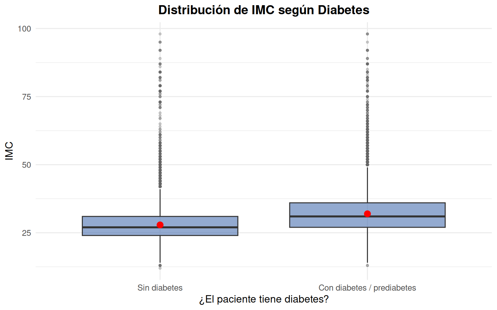
El gráfico muestra que los pacientes con diabetes o prediabetes presentan valores de IMC más altos y con mayor dispersión que los pacientes sin diabetes.
Comparación de ambas muestras
| Diabetes | n | media | ds | mediana | minimo | maximo | Q1 | Q3 | IQR |
|---|---|---|---|---|---|---|---|---|---|
| 0 | 33960 | 27.88 | 6.26 | 27 | 12 | 98 | 24 | 31 | 7 |
| 1 | 35097 | 31.96 | 7.38 | 31 | 13 | 98 | 27 | 36 | 9 |
| TOTAL | 69057 | 29.96 | 7.15 | 29 | 12 | 98 | 25 | 33 | 8 |
Prueba de normalidad (Anderson-Darling)
## Anderson-Darling: Sin diabetes
## Estadístico: 640.0333
## p-valor: 3.7000e-24
## Resultado: Rechaza H0 (no normal)
##
## Anderson-Darling: Con diabetes / prediabetes
## Estadístico: 519.7446
## p-valor: 3.7000e-24
## Resultado: Rechaza H0 (no normal)Con un nivel de confianza del 95%, la prueba de Anderson-Darling indica que ninguno de los dos grupos sigue una distribución normal.
Prueba de igualdad de varianzas (Levene)
## Estadístico de Levene: 796.6615
## p-valor: 2.8228e-174
## Resultado: Rechaza H0 (varianzas distintas)La prueba de Levene indica que las varianzas de ambos grupos son estadísticamente distintas.
Prueba de Mann-Whitney (Wilcoxon rank-sum)
## Mann-Whitney U (Wilcoxon rank-sum)
## Estadístico W: 815513028.5000
## p-valor: 0.000000e+00
## Resultado: Rechaza H0 (distribuciones distintas)Dado que ninguno de los dos grupos sigue una distribución normal, se utiliza la prueba de Mann-Whitney en lugar de una prueba t. El resultado indica que se rechaza la hipótesis nula: los grupos difieren significativamente en IMC.
2.1.2 Variable SaludM (días de salud mental no buena en los últimos 30 días)
Gráfico de caja y bigotes bivariado
bivar_boxplot(df, target, "SaludM", etiquetas_diabetes,
color = "#4C72B0", titulo = "Distribución de SaludM según Diabetes")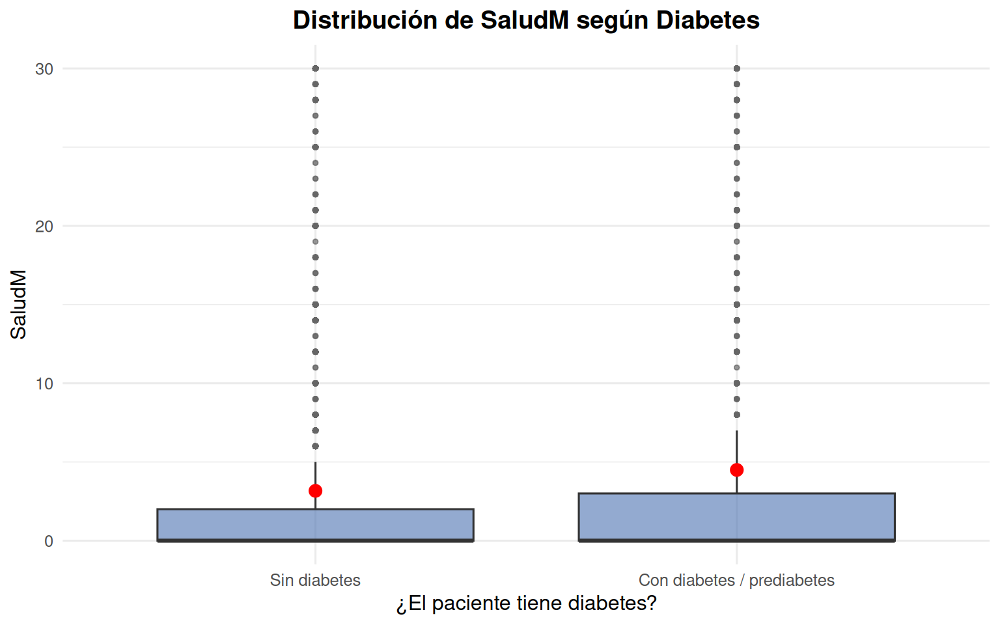
El gráfico muestra que los pacientes con diabetes o prediabetes presentan valores de SaludM más altos que los pacientes sin diabetes.
Comparación de ambas muestras
| Diabetes | n | media | ds | mediana | minimo | maximo | Q1 | Q3 | IQR |
|---|---|---|---|---|---|---|---|---|---|
| 0 | 33960 | 3.16 | 7.33 | 0 | 0 | 30 | 0 | 2 | 2 |
| 1 | 35097 | 4.49 | 8.97 | 0 | 0 | 30 | 0 | 3 | 3 |
| TOTAL | 69057 | 3.84 | 8.23 | 0 | 0 | 30 | 0 | 3 | 3 |
Prueba de normalidad (Anderson-Darling)
## Anderson-Darling: Sin diabetes
## Estadístico: 7261.1022
## p-valor: 3.7000e-24
## Resultado: Rechaza H0 (no normal)
##
## Anderson-Darling: Con diabetes / prediabetes
## Estadístico: 6930.6503
## p-valor: 3.7000e-24
## Resultado: Rechaza H0 (no normal)Prueba de igualdad de varianzas (Levene)
## Estadístico de Levene: 452.5269
## p-valor: 4.2676e-100
## Resultado: Rechaza H0 (varianzas distintas)Prueba de Mann-Whitney (Wilcoxon rank-sum)
## Mann-Whitney U (Wilcoxon rank-sum)
## Estadístico W: 623076966.0000
## p-valor: 1.791576e-35
## Resultado: Rechaza H0 (distribuciones distintas)Dado que ninguno de los dos grupos sigue una distribución normal, se utiliza la prueba de Mann-Whitney. El resultado indica que se rechaza la hipótesis nula.
2.1.3 Variable SaludF (días de salud física no buena en los últimos 30 días)
Gráfico de caja y bigotes bivariado
bivar_boxplot(df, target, "SaludF", etiquetas_diabetes,
color = "#4C72B0", titulo = "Distribución de SaludF según Diabetes")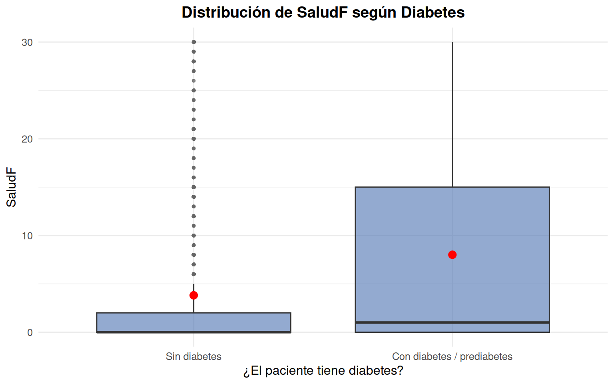
El gráfico muestra que los pacientes con diabetes o prediabetes presentan valores de SaludF más altos que los pacientes sin diabetes.
Comparación de ambas muestras
| Diabetes | n | media | ds | mediana | minimo | maximo | Q1 | Q3 | IQR |
|---|---|---|---|---|---|---|---|---|---|
| 0 | 33960 | 3.81 | 8.23 | 0 | 0 | 30 | 0 | 2 | 2 |
| 1 | 35097 | 8.01 | 11.32 | 1 | 0 | 30 | 0 | 15 | 15 |
| TOTAL | 69057 | 5.95 | 10.14 | 0 | 0 | 30 | 0 | 6 | 6 |
Prueba de normalidad (Anderson-Darling)
## Anderson-Darling: Sin diabetes
## Estadístico: 7031.1427
## p-valor: 3.7000e-24
## Resultado: Rechaza H0 (no normal)
##
## Anderson-Darling: Con diabetes / prediabetes
## Estadístico: 4639.2176
## p-valor: 3.7000e-24
## Resultado: Rechaza H0 (no normal)Prueba de igualdad de varianzas (Levene)
## Estadístico de Levene: 3234.6233
## p-valor: 0.0000e+00
## Resultado: Rechaza H0 (varianzas distintas)Prueba de Mann-Whitney (Wilcoxon rank-sum)
## Mann-Whitney U (Wilcoxon rank-sum)
## Estadístico W: 725339035.0000
## p-valor: 0.000000e+00
## Resultado: Rechaza H0 (distribuciones distintas)El promedio de días con mala salud física es mayor en el grupo con diabetes; se rechaza la hipótesis nula.
2.2 Variable respuesta frente a variables categóricas
Para cada variable categórica se construirá una tabla de frecuencias y porcentajes por grupo, un gráfico de barras agrupadas y una prueba de independencia (chi-cuadrado).
# Descripciones amigables para cada variable categórica (usadas como
# encabezado de cada subsección).
descripciones <- c(
PA_alta = "presión arterial alta",
col_alto = "colesterol alto",
CheckCol = "chequeo de colesterol en los últimos 5 años",
Fumador = "haber fumado al menos 100 cigarrillos en la vida",
derrame = "haber tenido un derrame cerebral",
EnfCardi = "enfermedad coronaria o infarto",
ActFisi = "actividad física en los últimos 30 días",
fruta = "consumo de fruta al menos una vez al día",
vegetales = "consumo de vegetales al menos una vez al día",
Alcohlico = "consumo excesivo de alcohol",
eps = "cobertura de salud (EPS o seguro médico)",
AfordabilidadMedica = "no poder costear una consulta médica por dinero en el último año",
SaludG = "salud general percibida",
DificultadCaminar = "dificultad seria para caminar o subir escaleras",
Genero = "género",
Edad = "categoría de edad (rangos de 5 años, de 18 a 80+)",
Educacion = "nivel educativo alcanzado",
Ingresos = "nivel de ingresos anual del hogar"
)
for (v in variables_categoricas) {
cat(paste0("\n### Variable `", v, "` (", descripciones[[v]], ")\n\n"))
cat("**Tabla de frecuencias por grupo**\n\n")
tab <- bivar_tabla_frecuencias(df, target, v)
print(mostrar_tabla(tab))
cat("\n\n**Gráfico de barras agrupadas**\n\n")
p <- bivar_grafico_barras(tab, target, etiquetas_diabetes,
titulo = paste0("Distribución de ", v, " según Diabetes"),
xlab = v)
print(p)
cat("\n\n**Prueba de independencia (chi-cuadrado)**\n\n")
prueba_chi2(df, target, v)
cat("\n\n")
}2.2.1 Variable PA_alta (presión arterial alta)
Tabla de frecuencias por grupo
| Diabetes | categoria | n | porcentaje |
|---|---|---|---|
| 0 | 0 | 20918 | 61.60 |
| 0 | 1 | 13042 | 38.40 |
| 1 | 1 | 26405 | 75.23 |
| 1 | 0 | 8692 | 24.77 |
Gráfico de barras agrupadas
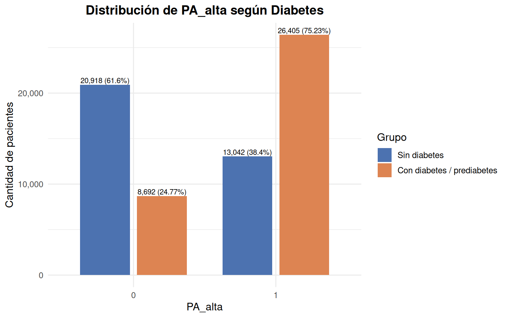
Prueba de independencia (chi-cuadrado)
Estadístico X²: 9558.8268 p-valor: 0.0000e+00 Grados de libertad: 1 Resultado: Rechaza H0 (dependientes)
2.2.2 Variable col_alto (colesterol alto)
Tabla de frecuencias por grupo
| Diabetes | categoria | n | porcentaje |
|---|---|---|---|
| 0 | 0 | 20764 | 61.14 |
| 0 | 1 | 13196 | 38.86 |
| 1 | 1 | 23496 | 66.95 |
| 1 | 0 | 11601 | 33.05 |
Gráfico de barras agrupadas
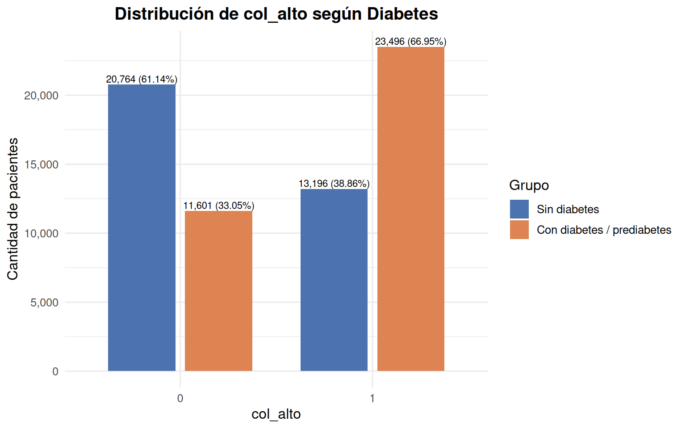
Prueba de independencia (chi-cuadrado)
Estadístico X²: 5468.3060 p-valor: 0.0000e+00 Grados de libertad: 1 Resultado: Rechaza H0 (dependientes)
2.2.3 Variable CheckCol (chequeo de colesterol en los últimos 5 años)
Tabla de frecuencias por grupo
| Diabetes | categoria | n | porcentaje |
|---|---|---|---|
| 0 | 1 | 32461 | 95.59 |
| 0 | 0 | 1499 | 4.41 |
| 1 | 1 | 34856 | 99.31 |
| 1 | 0 | 241 | 0.69 |
Gráfico de barras agrupadas
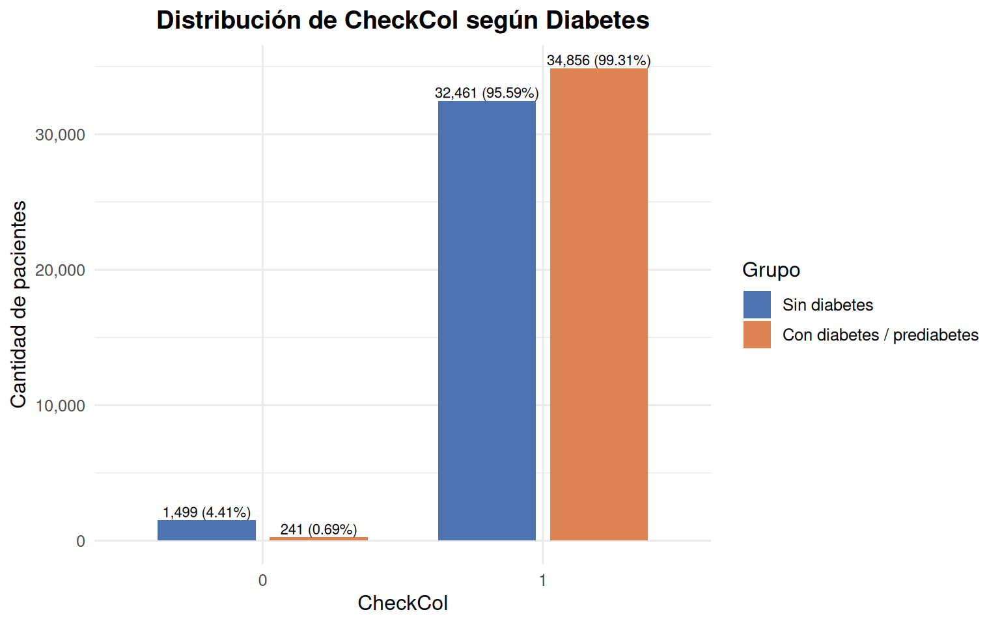
Prueba de independencia (chi-cuadrado)
Estadístico X²: 976.2730 p-valor: 2.5806e-214 Grados de libertad: 1 Resultado: Rechaza H0 (dependientes)
2.2.4 Variable Fumador (haber fumado al menos 100 cigarrillos en la vida)
Tabla de frecuencias por grupo
| Diabetes | categoria | n | porcentaje |
|---|---|---|---|
| 0 | 0 | 18902 | 55.66 |
| 0 | 1 | 15058 | 44.34 |
| 1 | 1 | 18223 | 51.92 |
| 1 | 0 | 16874 | 48.08 |
Gráfico de barras agrupadas
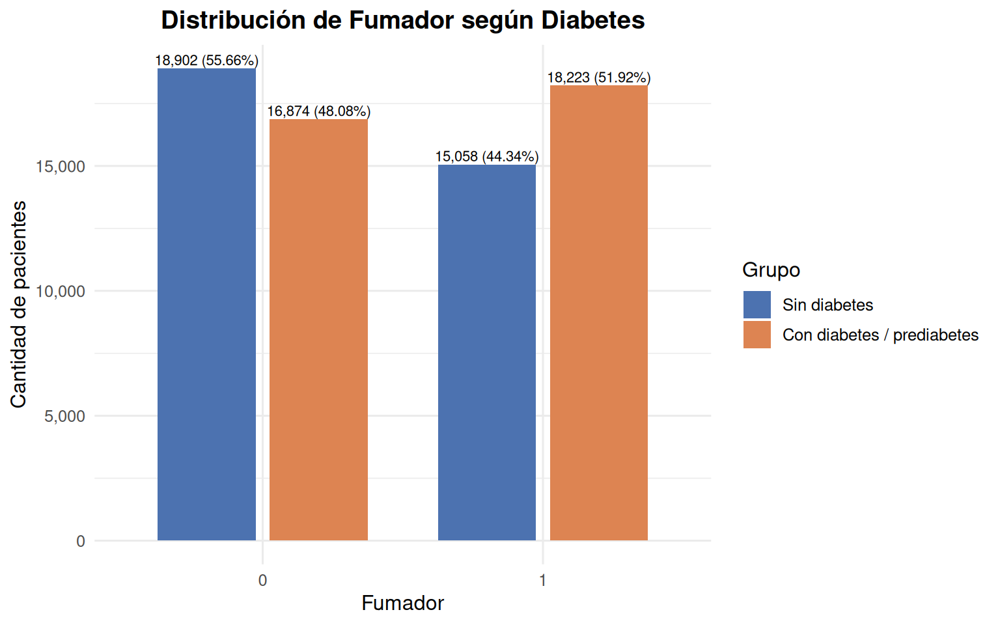
Prueba de independencia (chi-cuadrado)
Estadístico X²: 397.3360 p-valor: 2.0934e-88 Grados de libertad: 1 Resultado: Rechaza H0 (dependientes)
2.2.5 Variable derrame (haber tenido un derrame cerebral)
Tabla de frecuencias por grupo
| Diabetes | categoria | n | porcentaje |
|---|---|---|---|
| 0 | 0 | 32833 | 96.68 |
| 0 | 1 | 1127 | 3.32 |
| 1 | 0 | 31829 | 90.69 |
| 1 | 1 | 3268 | 9.31 |
Gráfico de barras agrupadas
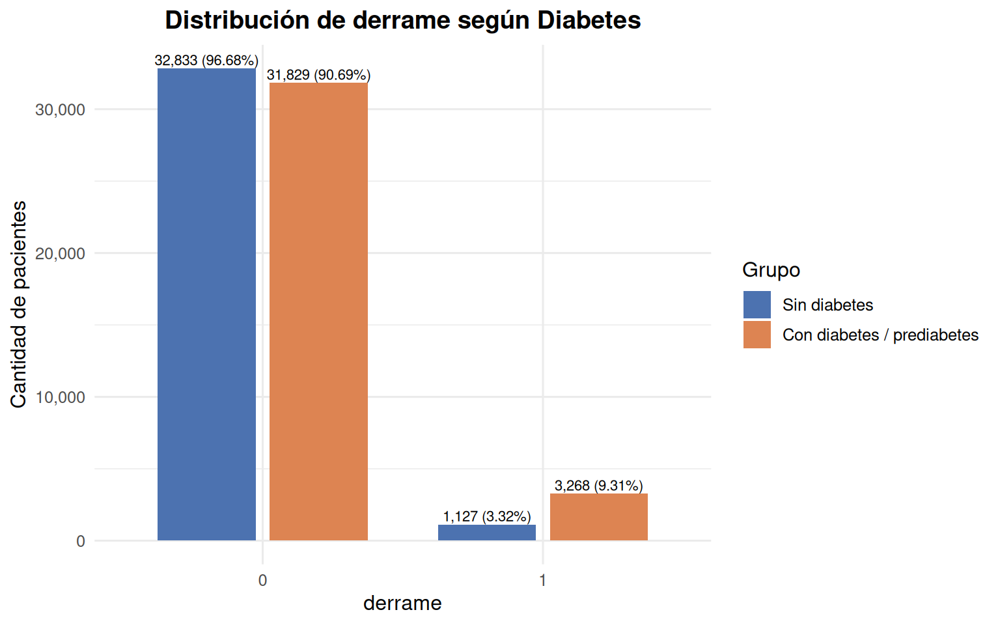
Prueba de independencia (chi-cuadrado)
Estadístico X²: 1040.1270 p-valor: 3.4062e-228 Grados de libertad: 1 Resultado: Rechaza H0 (dependientes)
2.2.6 Variable EnfCardi (enfermedad coronaria o infarto)
Tabla de frecuencias por grupo
| Diabetes | categoria | n | porcentaje |
|---|---|---|---|
| 0 | 0 | 31397 | 92.45 |
| 0 | 1 | 2563 | 7.55 |
| 1 | 0 | 27241 | 77.62 |
| 1 | 1 | 7856 | 22.38 |
Gráfico de barras agrupadas
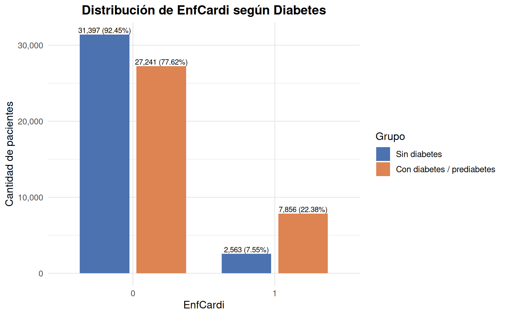
Prueba de independencia (chi-cuadrado)
Estadístico X²: 2965.5615 p-valor: 0.0000e+00 Grados de libertad: 1 Resultado: Rechaza H0 (dependientes)
2.2.7 Variable ActFisi (actividad física en los últimos 30 días)
Tabla de frecuencias por grupo
| Diabetes | categoria | n | porcentaje |
|---|---|---|---|
| 0 | 1 | 26038 | 76.67 |
| 0 | 0 | 7922 | 23.33 |
| 1 | 1 | 22059 | 62.85 |
| 1 | 0 | 13038 | 37.15 |
Gráfico de barras agrupadas
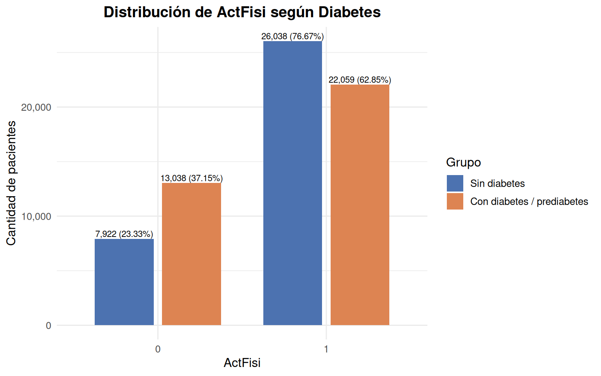
Prueba de independencia (chi-cuadrado)
Estadístico X²: 1559.6134 p-valor: 0.0000e+00 Grados de libertad: 1 Resultado: Rechaza H0 (dependientes)
2.2.8 Variable fruta (consumo de fruta al menos una vez al día)
Tabla de frecuencias por grupo
| Diabetes | categoria | n | porcentaje |
|---|---|---|---|
| 0 | 1 | 21320 | 62.78 |
| 0 | 0 | 12640 | 37.22 |
| 1 | 1 | 20505 | 58.42 |
| 1 | 0 | 14592 | 41.58 |
Gráfico de barras agrupadas
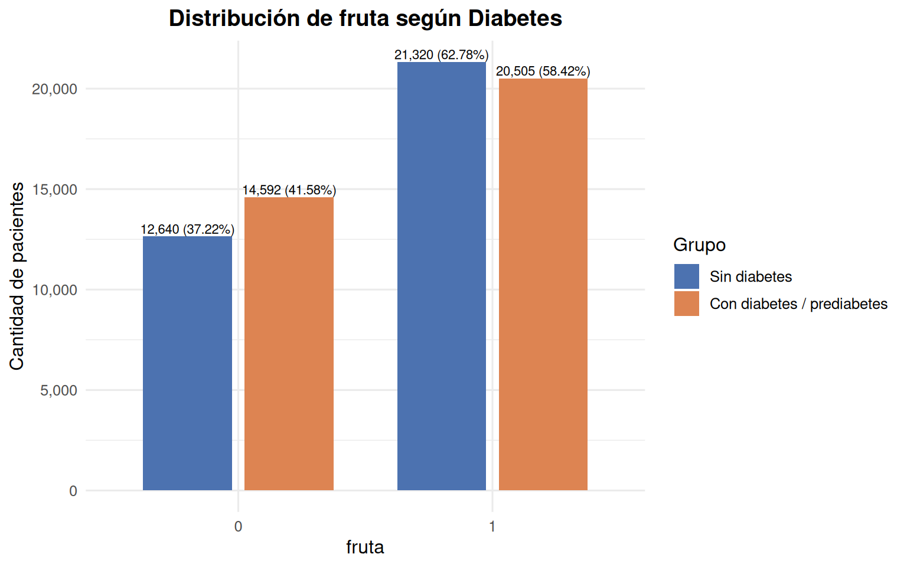
Prueba de independencia (chi-cuadrado)
Estadístico X²: 137.1180 p-valor: 1.1363e-31 Grados de libertad: 1 Resultado: Rechaza H0 (dependientes)
2.2.9 Variable vegetales (consumo de vegetales al menos una vez al día)
Tabla de frecuencias por grupo
| Diabetes | categoria | n | porcentaje |
|---|---|---|---|
| 0 | 1 | 27654 | 81.43 |
| 0 | 0 | 6306 | 18.57 |
| 1 | 1 | 26495 | 75.49 |
| 1 | 0 | 8602 | 24.51 |
Gráfico de barras agrupadas
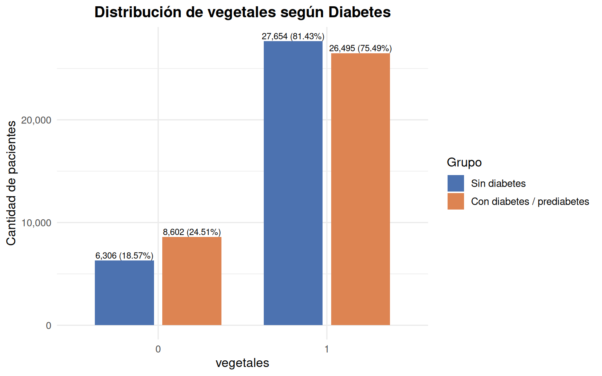
Prueba de independencia (chi-cuadrado)
Estadístico X²: 359.7942 p-valor: 3.1217e-80 Grados de libertad: 1 Resultado: Rechaza H0 (dependientes)
2.2.10 Variable Alcohlico (consumo excesivo de alcohol)
Tabla de frecuencias por grupo
| Diabetes | categoria | n | porcentaje |
|---|---|---|---|
| 0 | 0 | 31787 | 93.60 |
| 0 | 1 | 2173 | 6.40 |
| 1 | 0 | 34265 | 97.63 |
| 1 | 1 | 832 | 2.37 |
Gráfico de barras agrupadas
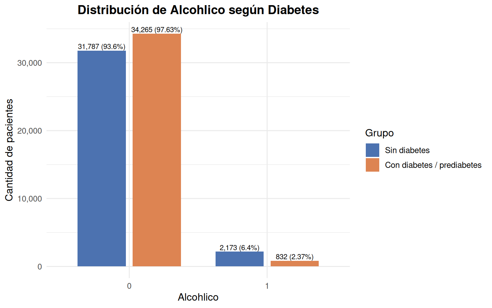
Prueba de independencia (chi-cuadrado)
Estadístico X²: 672.8561 p-valor: 2.3905e-148 Grados de libertad: 1 Resultado: Rechaza H0 (dependientes)
2.2.11 Variable eps (cobertura de salud (EPS o seguro médico))
Tabla de frecuencias por grupo
| Diabetes | categoria | n | porcentaje |
|---|---|---|---|
| 0 | 1 | 32199 | 94.81 |
| 0 | 0 | 1761 | 5.19 |
| 1 | 1 | 33675 | 95.95 |
| 1 | 0 | 1422 | 4.05 |
Gráfico de barras agrupadas
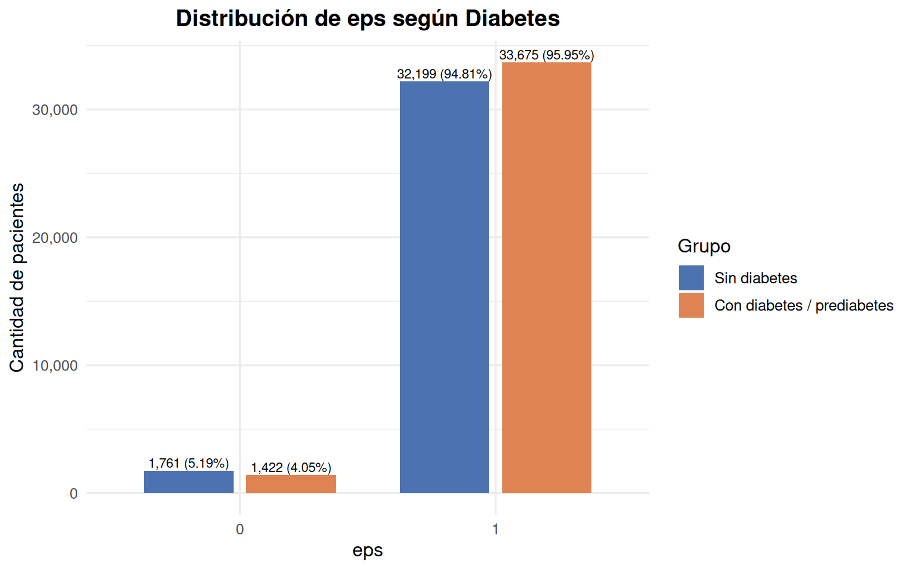
Prueba de independencia (chi-cuadrado)
Estadístico X²: 50.4698 p-valor: 1.2101e-12 Grados de libertad: 1 Resultado: Rechaza H0 (dependientes)
2.2.12 Variable AfordabilidadMedica (no poder costear una consulta médica por dinero en el último año)
Tabla de frecuencias por grupo
| Diabetes | categoria | n | porcentaje |
|---|---|---|---|
| 0 | 0 | 31063 | 91.47 |
| 0 | 1 | 2897 | 8.53 |
| 1 | 0 | 31355 | 89.34 |
| 1 | 1 | 3742 | 10.66 |
Gráfico de barras agrupadas
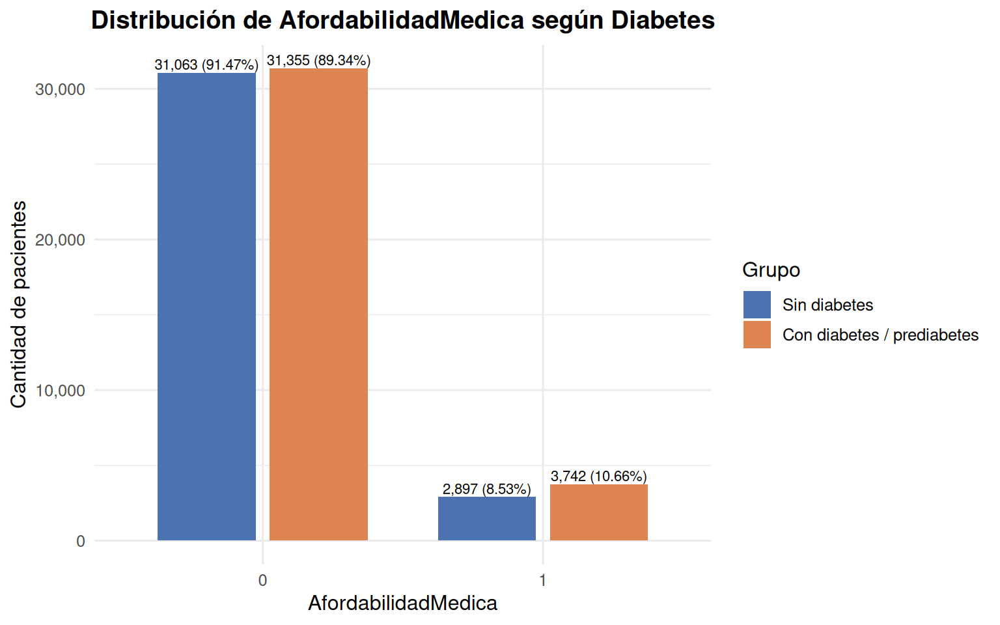
Prueba de independencia (chi-cuadrado)
Estadístico X²: 90.2202 p-valor: 2.1307e-21 Grados de libertad: 1 Resultado: Rechaza H0 (dependientes)
2.2.13 Variable SaludG (salud general percibida)
Tabla de frecuencias por grupo
| Diabetes | categoria | n | porcentaje |
|---|---|---|---|
| 0 | 2 | 12825 | 37.77 |
| 0 | 3 | 9922 | 29.22 |
| 0 | 1 | 6472 | 19.06 |
| 0 | 4 | 3511 | 10.34 |
| 0 | 5 | 1230 | 3.62 |
| 1 | 3 | 13324 | 37.96 |
| 1 | 4 | 9781 | 27.87 |
| 1 | 2 | 6280 | 17.89 |
| 1 | 5 | 4577 | 13.04 |
| 1 | 1 | 1135 | 3.23 |
Gráfico de barras agrupadas
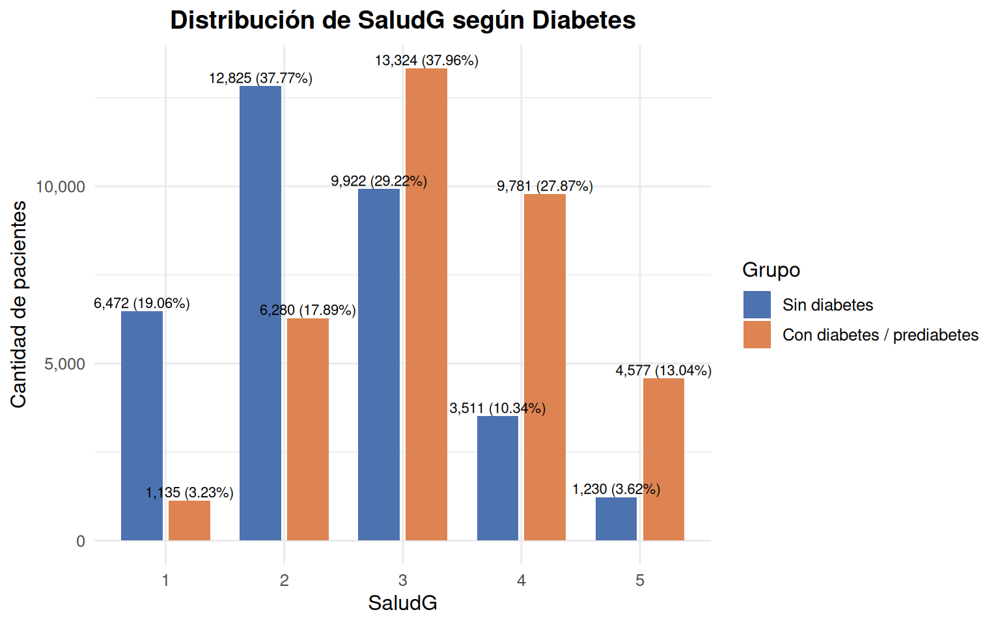
Prueba de independencia (chi-cuadrado)
Estadístico X²: 11355.5693 p-valor: 0.0000e+00 Grados de libertad: 4 Resultado: Rechaza H0 (dependientes)
2.2.14 Variable DificultadCaminar (dificultad seria para caminar o subir escaleras)
Tabla de frecuencias por grupo
| Diabetes | categoria | n | porcentaje |
|---|---|---|---|
| 0 | 0 | 29215 | 86.03 |
| 0 | 1 | 4745 | 13.97 |
| 1 | 0 | 21983 | 62.63 |
| 1 | 1 | 13114 | 37.37 |
Gráfico de barras agrupadas
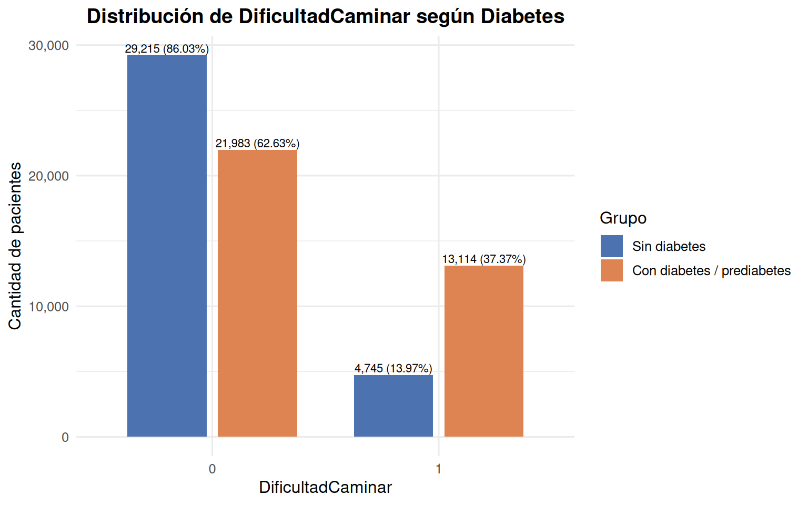
Prueba de independencia (chi-cuadrado)
Estadístico X²: 4926.0161 p-valor: 0.0000e+00 Grados de libertad: 1 Resultado: Rechaza H0 (dependientes)
2.2.15 Variable Genero (género)
Tabla de frecuencias por grupo
| Diabetes | categoria | n | porcentaje |
|---|---|---|---|
| 0 | 0 | 19190 | 56.51 |
| 0 | 1 | 14770 | 43.49 |
| 1 | 0 | 18345 | 52.27 |
| 1 | 1 | 16752 | 47.73 |
Gráfico de barras agrupadas
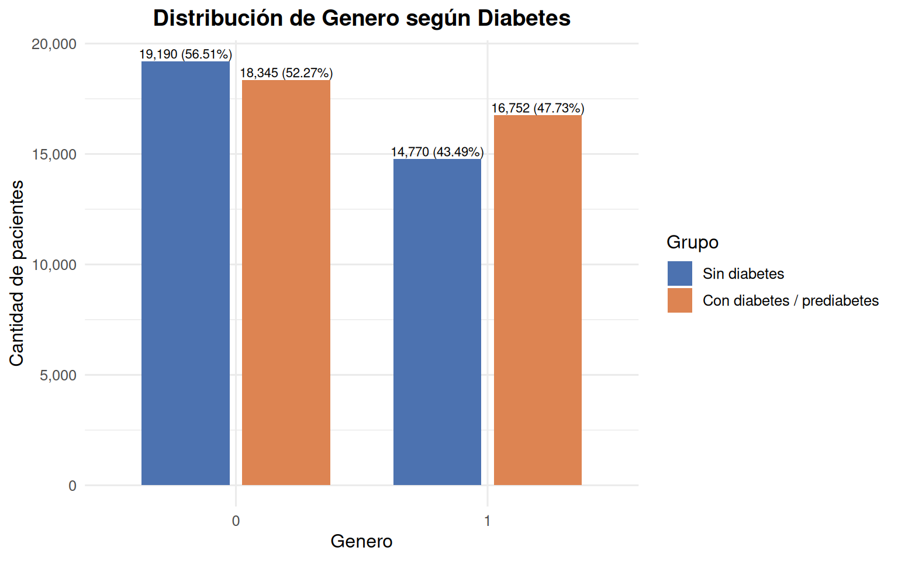
Prueba de independencia (chi-cuadrado)
Estadístico X²: 124.9581 p-valor: 5.1980e-29 Grados de libertad: 1 Resultado: Rechaza H0 (dependientes)
2.2.16 Variable Edad (categoría de edad (rangos de 5 años, de 18 a 80+))
Tabla de frecuencias por grupo
| Diabetes | categoria | n | porcentaje |
|---|---|---|---|
| 0 | 9 | 4192 | 12.34 |
| 0 | 8 | 4151 | 12.22 |
| 0 | 10 | 4102 | 12.08 |
| 0 | 7 | 3555 | 10.47 |
| 0 | 11 | 2842 | 8.37 |
| 0 | 6 | 2731 | 8.04 |
| 0 | 5 | 2338 | 6.88 |
| 0 | 13 | 2196 | 6.47 |
| 0 | 4 | 2066 | 6.08 |
| 0 | 12 | 1975 | 5.82 |
| 0 | 3 | 1680 | 4.95 |
| 0 | 2 | 1238 | 3.65 |
| 0 | 1 | 894 | 2.63 |
| 1 | 10 | 6483 | 18.47 |
| 1 | 9 | 5681 | 16.19 |
| 1 | 11 | 5090 | 14.50 |
| 1 | 8 | 4241 | 12.08 |
| 1 | 12 | 3383 | 9.64 |
| 1 | 13 | 3200 | 9.12 |
| 1 | 7 | 3072 | 8.75 |
| 1 | 6 | 1741 | 4.96 |
| 1 | 5 | 1049 | 2.99 |
| 1 | 4 | 625 | 1.78 |
| 1 | 3 | 314 | 0.89 |
| 1 | 2 | 140 | 0.40 |
| 1 | 1 | 78 | 0.22 |
Gráfico de barras agrupadas
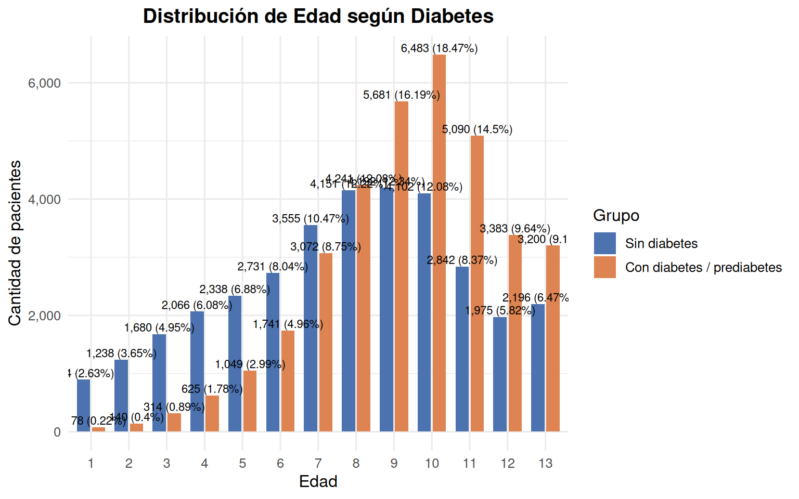
Prueba de independencia (chi-cuadrado)
Estadístico X²: 5950.1989 p-valor: 0.0000e+00 Grados de libertad: 12 Resultado: Rechaza H0 (dependientes)
2.2.17 Variable Educacion (nivel educativo alcanzado)
Tabla de frecuencias por grupo
| Diabetes | categoria | n | porcentaje |
|---|---|---|---|
| 0 | 6 | 14418 | 42.46 |
| 0 | 5 | 9534 | 28.07 |
| 0 | 4 | 8365 | 24.63 |
| 0 | 3 | 1151 | 3.39 |
| 0 | 2 | 464 | 1.37 |
| 0 | 1 | 28 | 0.08 |
| 1 | 4 | 11032 | 31.43 |
| 1 | 5 | 10311 | 29.38 |
| 1 | 6 | 10228 | 29.14 |
| 1 | 3 | 2296 | 6.54 |
| 1 | 2 | 1183 | 3.37 |
| 1 | 1 | 47 | 0.13 |
Gráfico de barras agrupadas
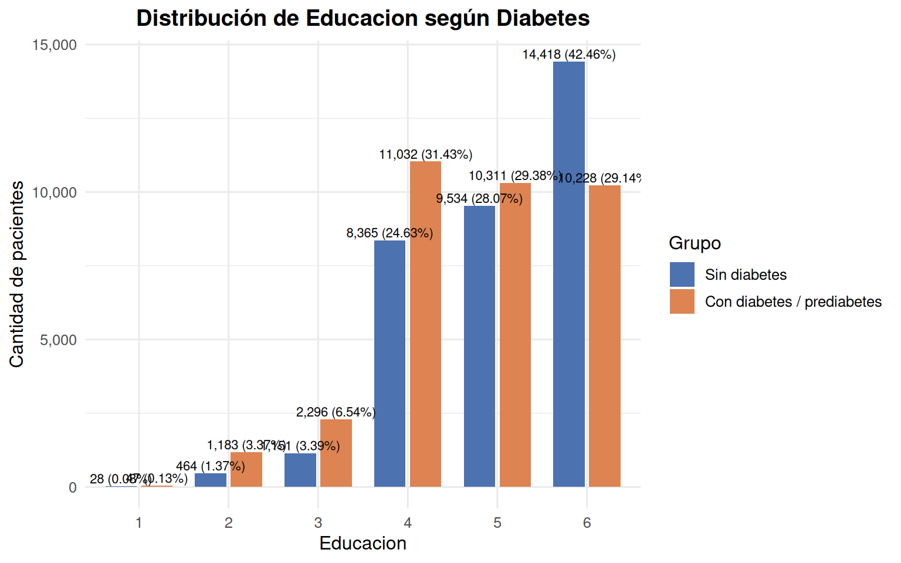
Prueba de independencia (chi-cuadrado)
Estadístico X²: 1790.2500 p-valor: 0.0000e+00 Grados de libertad: 5 Resultado: Rechaza H0 (dependientes)
2.2.18 Variable Ingresos (nivel de ingresos anual del hogar)
Tabla de frecuencias por grupo
| Diabetes | categoria | n | porcentaje |
|---|---|---|---|
| 0 | 8 | 12265 | 36.12 |
| 0 | 7 | 6048 | 17.81 |
| 0 | 6 | 4935 | 14.53 |
| 0 | 5 | 3486 | 10.27 |
| 0 | 4 | 2599 | 7.65 |
| 0 | 3 | 1988 | 5.85 |
| 0 | 2 | 1411 | 4.15 |
| 0 | 1 | 1228 | 3.62 |
| 1 | 8 | 7042 | 20.06 |
| 1 | 6 | 5260 | 14.99 |
| 1 | 7 | 5226 | 14.89 |
| 1 | 5 | 4489 | 12.79 |
| 1 | 4 | 4047 | 11.53 |
| 1 | 3 | 3564 | 10.15 |
| 1 | 2 | 3086 | 8.79 |
| 1 | 1 | 2383 | 6.79 |
Gráfico de barras agrupadas
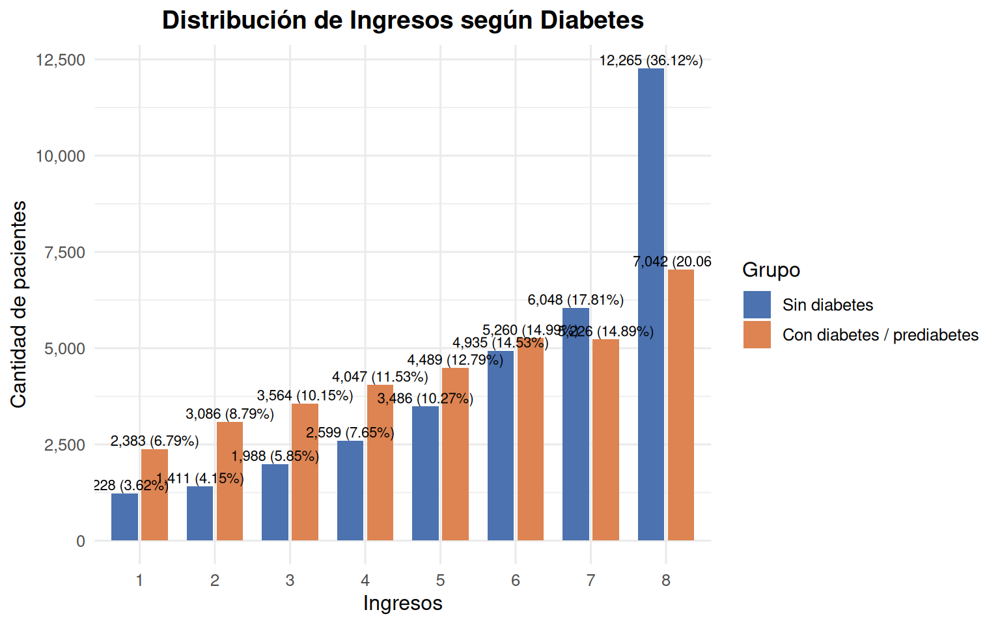
Prueba de independencia (chi-cuadrado)
Estadístico X²: 3347.7424 p-valor: 0.0000e+00 Grados de libertad: 7 Resultado: Rechaza H0 (dependientes)
2.3 Conclusión
El análisis bivariado confirma que la condición de diabetes está asociada, de manera estadísticamente significativa, con todas las variables numéricas y categóricas evaluadas. Entre las variables numéricas, el índice de masa corporal (IMC) muestra la diferencia más clara entre grupos: los pacientes con diabetes o prediabetes presentan, en promedio, valores más altos que quienes no la tienen. Todas las variables categóricas evaluadas resultaron estadísticamente dependientes de Diabetes según la prueba de chi-cuadrado, lo que sugiere que factores como la presión arterial alta, el colesterol alto, la actividad física, la dificultad para caminar, la edad y el nivel socioeconómico están relacionados con la presencia de diabetes en esta muestra.